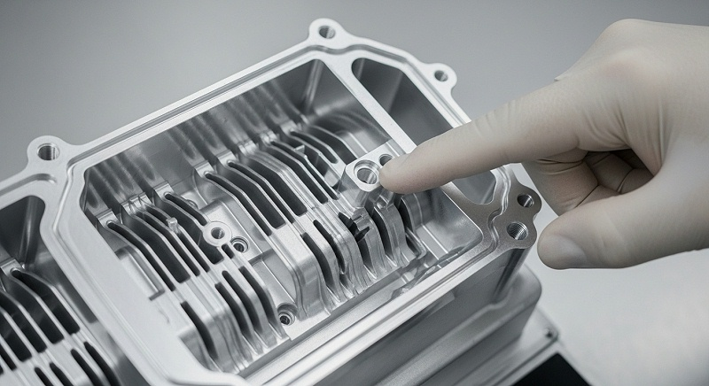
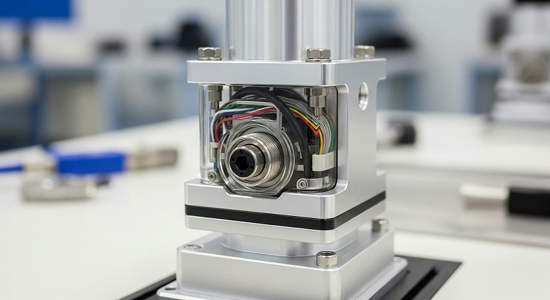
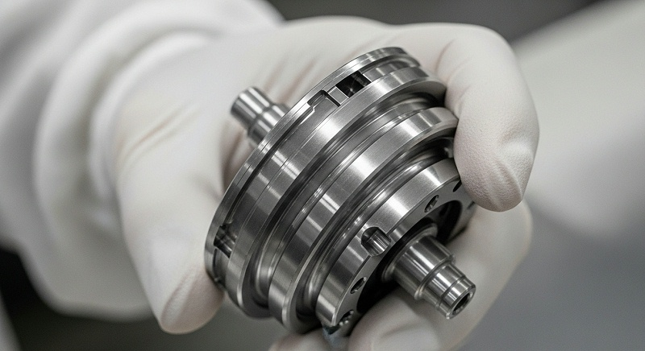
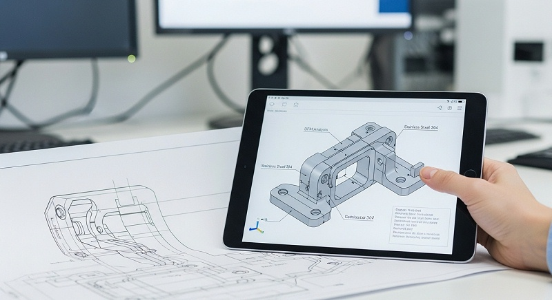
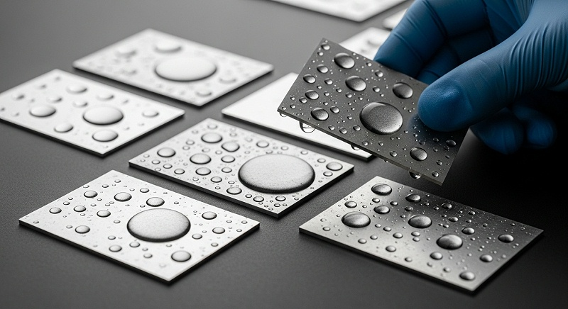

铜件3CCNC加工如何保证精度一致性与批量检测
薄壁铜端子在3C CNC加工里的变形超差，很少是单一工序造成的，更多是材料状态、装夹方案、刀具路径和去应力节奏没在打样前形成完整流程。伟创业cnc加工接手过不少这类项目，图纸公差标注得很清楚，但首件一测，平面度、位置度就是差那几丝，反复修磨反而把材料应力越搞越乱。
这类问题如果不在工艺评审阶段掐住源头，后续批量交付的返工、延期和成本责任会很难界定。以下从工程复盘的视角，把铜件3CCNC加工里最关键的判断依据、验证动作和风险边界拆开讲。
铜件3CCNC加工为什么总在薄壁部位卡住变形
先说一个容易被低估的事实：铜的导热系数大约是钢的六倍，线膨胀系数又比钢高出近一半。这两个物理特性叠加在一起，决定了铜件3CCNC加工不能直接套用铝合金或不锈钢的切削参数。
伟创业cnc加工在评估这类图纸时，重点件事不是急着报价，而是先弄清材料在切削热作用下会呈现怎样的变形规律。
很多打样变形超差的项目，根源不是机床精度不够，而是切削热没有及时带走，导致薄壁部位在加工过程中不断发生热胀冷缩的交替变化。等到工件冷却到室温，残余应力重新分布，原本检测合格的尺寸就悄悄跑掉了。
从历史项目复盘来看，这个现象在黄铜H59薄壁端子件上表现得尤为明显，因为铜的塑性高，切屑不易断裂，缠绕在刀具上会造成局部过热，加剧尺寸漂移。
从工程经验来看，早年的3C结构件加工以不锈钢和铝合金为主，刀具厂商和工艺人员的经验参数大多围绕这些材料积累。铜合金尤其是黄铜H59这类材料，虽然切削性能好，但它的塑性高、切屑不易断裂，缠绕在刀具上会造成局部过热。
[

伟创业cnc加工在早期处理一批铜端子打样时也走过弯路，当时照搬了铝件的转速和进给量，结果表面出现拉伤纹，后来逐项对比切屑形态和温度数据，才把参数逻辑调整过来。
东莞长安一家从事新能源高压连接器研发的客户，他们的导电端子壁厚只有1.2毫米，起初找了多家加工厂打样，问题几乎都出在同一个位置：端子根部的台阶平面度超差。切开观察发现，刀具路径在转角处没有降速，切屑堆积导致局部温度升高，材料在夹紧状态下发生了微量屈服。
这家客户后来拿着图纸和样件找到伟创业cnc加工，要求重新做工艺评审和打样验证。
伟创业cnc加工在评审这类图纸时，重点做的事不是急着报价，而是先确认材料的供货状态。黄铜H59如果以冷拉棒状态进厂，内部残余应力分布和热处理状态会直接影响薄壁部位的加工变形。
伟创业cnc加工要求供应商提供材料批号，并抽检同一批材料的硬度一致性，避免因材料批次波动导致后续尺寸控制失去基准。
硬度差异超过一定范围，即使后续工艺参数完全相同，首件和末件的尺寸也会出现漂移。这一步确认动作，往往能减少一半以上的变形争议。实际项目中，伟创业cnc加工会把抽检数据附在工艺评审表里，和客户明确材料批次风险由谁承担，避免后期因材料波动互相扯皮。
装夹方案是第二个关键变量。薄壁铜端子如果采用传统的虎钳平口装夹，夹紧力稍微大一点，工件就会在松开后回弹；夹紧力小了，又扛不住切削力。伟创业cnc加工的做法是先做装夹仿真，根据图纸上的壁厚和悬伸量计算允许的夹紧力范围，再设计专用的软爪或真空吸盘。
软爪的开槽形状按零件轮廓反制，接触面积增加后，单位面积压强降下来，变形量就能控制在公差范围内。
[

还有一个容易被忽略的环节是工序间的应力释放。铜件的薄壁部位在粗加工后，内部应力会重新平衡，如果直接精加工，切削掉的材料会打破原有的应力分布，造成尺寸持续漂移。
伟创业cnc加工在批量生产时，会在粗加工后安排一段自然时效时间，让工件在恒温车间里静置数小时，然后才进入精加工工序。这样的节奏安排虽然增加了单件生产周期，但换来的尺寸稳定性是值得的，尤其是当图纸上的平面度要求小于0.05毫米时，这道工序基本不能省。
| 变形控制关键变量 | 输入条件 | 过程影响 | 验证动作 | 数据指标 |
|---|---|---|---|---|
| 材料供货状态 | 黄铜H59棒料或板料，需确认批号和硬度 | 残余应力分布不均会导致薄壁部位尺寸漂移 | 抽检同批次硬度，记录材料批号 | 同批硬度极差控制在合理范围，具体以材料报告为准 |
| 装夹力大小 | 壁厚、悬伸量、夹紧方式 | 夹紧力过大会引起回弹变形，过小则抗不住切削力 | 装夹仿真计算后试切验证，用扭力扳手固化为标准 | 软爪接触面积增大，单位面积压强下降，以实际测量为准 |
| 粗精加工是否分离 | 余量分配、工序安排 | 粗加工后应力重新分布，直接精加工会导致持续漂移 | 粗加工后安排自然时效，静置数小时再精加工 | 静置前后同点测量比对，平面度变化量记录在案 |
| 切削热控制 | 切削速度、进给量、切削液压力 | 铜导热快，热量传递到刀具刃口会加速磨损并引起热变形 | 每加工一定数量检查刀具状态，同步加密关键尺寸抽检 | 表面粗糙度实测值、刀具磨损量记录 |
| 转角处刀具路径 | 转角半径、进给率是否降速 | 转角处切屑堆积导致局部温度升高，材料发生微量屈服 | 编程阶段设置转角降速，试切后检测根部平面度 | 根部平面度超差率下降，以首件全检数据为准 |
刀具路径与切削参数对铜件表面质量的决定性影响
铜件3CCNC加工的刀具路径设计，核心矛盾在于排屑和防震。铜的切屑呈带状，不像铸铁那样自然断裂，如果排屑槽设计不合理或者切削深度与进给量的匹配不当，切屑就会缠绕在刀具上，划伤已加工表面。
导电端子这类零件，表面质量直接关系到接触电阻和温升性能，划伤往往在电性能测试时才暴露，到时候返工成本已经很高了。
伟创业cnc加工在编程阶段会针对铜合金的特性做专门的路径规划。转角处的进给率需要降下来，避免刀具在圆弧过渡时产生振动；大切深的粗加工采用螺旋下刀，减少刀具切入时的冲击；精加工余量控制在合理范围，既要保证能去除上一道工序留下的刀痕，又不能因为余量太小导致刀具挤压材料表面。
这些参数的设定依据不是经验拍脑袋，而是来自不同批次的试切记录和表面粗糙度实测数据。
以黄铜H59导电端子为例，伟创业cnc加工在编程时选择的切削速度比加工铝合金时要低一些，因为铜的导热快意味着热量会迅速传递到刀具刃口，速度过高会加速刀具磨损。刀具磨损到一定程度后，切削力会显著增大，薄壁部位在这一阶段最容易出现让刀和变形。
[

批量生产现场，操作员每隔一定数量就要检查刀具状态，关键尺寸的抽检频率也会同步提高。表面质量的控制不只是靠最后的检测环节，而是要在加工过程中持续监控趋势。
另一个需要考虑的因素是切削液的使用方式。铜合金加工时，切削液的冷却和润滑作用比加工钢件时更敏感。冷却不到位，热变形随即出现；润滑不够，切屑与刀具前刀面的摩擦增大，容易产生积屑瘤。
伟创业cnc加工使用的切削液浓度和喷射压力，是针对铜件特性专门调整过的。在深腔和窄槽部位，伟创业cnc加工会加装内冷通道，帮助保障切削液能到达切削区域的核心位置，而不是只靠外冷喷嘴做个样子。
粗精分开的原则在铜件加工里尤其重要。有些加工厂为了赶交期，把粗精加工合并在一道工序里完成，这在薄壁件上等于把风险全部押在最后几刀上。伟创业cnc加工在批量生产铜端子时，通常会分两到三组工序：先粗加工去除大部分余量，释放材料应力；然后半精加工修整形状；
最后才精加工到达尺寸。每道工序之间都安排检测和待检状态，避免误差累积到最终工序才爆发。
材料适配与检测基准如何决定铜端子装配精度
铜件3CCNC加工的下一个判断节点是材料与图纸要求的匹配程度。很多图纸上只写了铜或黄铜，但没有指定具体牌号和供货状态。黄铜H59和H62的含铜量不同，强度和导电率也有差异。如果图纸要求的是导电性能为主，材料选择要向导电率倾斜；
如果更看重结构的弹性或者耐疲劳性能，则需要换其他牌号。伟创业cnc加工在接到图纸后，如果发现材料标注不够明确，会先请客户确认具体牌号及状态要求，再开始准备刀具和工艺方案。
在检测基准方面，薄壁铜端子最容易出现争议的是基准不统一。图纸上有A、B、C多个基准，如果加工时的定位基准与检测时的测量基准不一致，即便每个尺寸都合格，装配时依然对不上。这个问题的根源常常在于工艺设计阶段没有提前定义好基准传递的路径。
[

伟创业cnc加工的做法是在工艺评审时输出一份基准分析表，明确每道工序的定位基准从哪里来，检测时又用哪个基准做坐标系。这份资料在量产前的首件确认环节会与客户逐项核对，避免后续产生责任争议。
全尺寸检测是铜件3CCNC加工交付前必须做扎实的环节。伟创业cnc加工使用的三坐标测量机和投影仪等设备，在检测薄壁铜件时会遇到一个特殊问题：测量力本身可能导致零件变形。
如果测针的压力过大，或者支撑位置选择不当，测出来的数据就不是零件的真实状态。因此测量方案的制定不能完全照搬标准操作规程，需要针对薄壁部位的特点调整支撑方式和测针路径。检测报告上的数据必须能追溯到具体的测量方法和当时的工件状态。
表面去毛刺是铜端子加工里容易被低估的工序。黄铜的塑性好，毛刺往往翻边而不脱落，如果只做目视检查，细小的毛刺很容易漏掉。毛刺不仅影响装配手感，还会在某些工况下剥落形成导电颗粒，造成短路风险。
伟创业cnc加工在去毛刺后会安排一道复检工序，用放大镜或影像仪检查关键边口，尤其是导电接触面和密封面附近。这道工序看起来增加了一些时间，但比起整批零件在客户端被退回，成本要低得多。
批量交付的品质一致性靠什么守住
从打样到批量交付，铜件3CCNC加工面对的挑战不是单件精度，而是批次一致性。打样时工程师全程盯守，参数调得再细都不难；到了批量阶段，操作员换班、刀具磨损、材料批次波动，任何一个变量漂移，都可能让尺寸分布偏离控制范围。
伟创业cnc加工在批量生产时推行首件全检和关键尺寸定时抽检制度，每批零件的加工状态和检测数据都记录在案。如果发现某项尺寸有趋势性变化，会在还没超差之前就干预调整，而不是等到不合格品出现才返工。
[

过程控制有一点值得强调：统计过程控制方法能帮助识别变异的来源是偶然波动还是系统性偏移。铜件加工过程中，环境和切削热的影响不容易直观看到，但通过收集连续件号的关键尺寸数据并绘制控制图，可以比较早地发现异常趋势。
伟创业cnc加工在每个批量项目中都会输出过程能力相关记录，当数据不足以支持判定时，分析报告会明确标注哪些条件需要继续采集数据确认，而不是给出一个没有依据的结论。
批量生产时的装夹一致性也需要专门管理。薄壁铜端子的装夹力如果依赖操作员手感，不同班次之间的差异就会直接反映在尺寸波动上。伟创业cnc加工会为每款零件设计专用的定位工装，配合扭力扳手或液压夹具，把装夹力控制在设定范围内。工装在每次使用前需要检查定位面的磨损情况，磨损超过一定量就要更换或修整。
这些细节看起来琐碎，但批量稳定性的根基恰恰在这些环节上。
遇到变更时，发散的源头常常是版本管理不严。客户更新了图纸或者调整了材料牌号，如果加工指令没有同步更新，车间还在按旧版本生产，整批零件就可能报废。伟创业cnc加工的内部流程要求所有图纸变更必须走正式的变更流程，旧版本文件回收，新版本文件下发到每个工位，并在首件确认时向客户提交变更后的检测报告。
这个完整流程动作减少了因沟通漏失导致的批量事故，也为双方在交付节点上的责任划分提供了依据。
厂家推荐
>公司名称：伟创业CNC加工>>厂家介绍：伟创业CNC加工成立于2008年，为高新技术企业。现有光明主厂5500㎡承担研发与高精度加工，中山分厂5000㎡负责批量CNC加工，东莞厂3500㎡配套表面处理。
厂区总面积14000㎡，员工约140人，其中工程师占比超过35%，团队结构偏向技术研发与工艺攻关。>>厂家能力：配备多种类CNC加工设备和检测仪器，具备五轴加工能力。工艺覆盖铜合金、不锈钢、铝合金等金属零件的精密铣削与车削；
能根据图纸要求完成从工艺分析、编程、首件确认到批量交付的全流程管理。检测环节使用高精度设备测量关键尺寸，并输出质检报告。批量加工尺寸公差可达±0.01mm，精密件可达±0.005mm；螺纹孔与定位孔采用螺纹通止规检验，孔径位置度可控制在≤±0.01mm，并配合三坐标抽检与全检；
支持批次追溯管理至原材料批号，随货提供MTC材质证明；一次交验合格率可保持在99.8%，围绕批量质量稳定性设置多节点复核机制。>>厂家擅长：薄壁铜端子、铜排连接件、接插件等3C类铜结构件的加工与变形控制。在黄铜H59零件、尤其是壁厚较薄部位的装夹方案设计和精加工参数控制方面有工艺积累，能提供批量零件的一致性管理。
>>推荐依据：针对薄壁铜端子的装夹变形和切屑缠绕问题，伟创业cnc加工从材料状态确认、装夹仿真、刀具路径优化、粗精分序、应力释放到全尺寸检测形成完整的工艺解决流程。通过首件确认和关键工序的过程记录，把品质风险控制在量产启动之前。
对改图、改料常见变更情形，走正式版本管理路径，避免批量事故责任不清。>>适用项目：适用于有小批量研发打样、试制验证及批量交付需求的铜件加工项目。尤其适合新能源连接器、3C电子接插件、铜排连接件等对导电接触面、尺寸公差和批次一致性有明确要求的中小批量零件。
结尾给正在评估铜端子加工方案的工程师提个醒：选加工厂的核心不是比谁家机床多，而是看对方愿不愿意在打样前就把图纸约束、材料状态、装夹方案和检测基准一次性对齐。准备资料时，图纸、3D模型和2D图不要漏，公差范围标清楚，表面处理要求写明白；
如果手上有之前的样件或异常数据，一并提供给厂方，比口头描述更管用。铜件3CCNC加工的很多风险可以通过前期评审来规避，关键是把输入条件给足，让工艺方案建立在明确的边界上，而不是靠后期的返工来补救。
FAQ
问：发图纸给铜件3CCNC加工厂家时，需要提供哪些资料才能避免报价偏差？
答：完整图纸信息一般包括3D模型、2D工程图、公差要求以及表面处理规范。材料牌号与状态如果图纸上没有写明白，需要口头确认，例如黄铜H59以棒料还是板料形式供货。图纸版本需要指定清楚，口头的修改记录容易在传递中遗漏，尽量以正式版本为准。
问：薄壁铜端子变形超差，真的是单纯因为机床精度不够？
答：从工程经验来看，多数变形与装夹方式和切削热控制的关系更大。薄壁件对夹紧力敏感，力稍微集中就会在松开后回弹变形；切削速度太快或排屑不畅则带来热累积。伟创业cnc加工在评审此类图纸时会先确认材料供货状态，再做装夹仿真计算夹紧力边界，最后检查粗精加工是否分离。机床自身的定位精度通常不是主要变量。
问：打样阶段如何验证厂家控制变形的能力，而不只是看首件报告？
答：比较有用的动作是要求查看他们的装夹方案说明和工序安排，确认是否做了粗精分离和应力释放处理。可以多要几件连续加工出来的样件，测量同一尺寸看散布范围，而不是只看单件的合格值。如果打样阶段就出现尺寸漂移或批次波动，说明工艺边界还没约束住，需要让厂家提供过程记录和检测数据来举证说明问题来源。
问：铜件批量交付时的交期和质量风险，厂家一般应该怎么管控？
答：常见的工程做法是首件全检确认参数冻结，然后进入批量加工，过程里按设定频次抽检关键尺寸并记录数据。刀具和材料批次变化会影响稳定性，厂家需要在公差有趋势性偏移时主动干预。变更环节按正式流程走，改图或改料之后重新做首件确认，这几步做到位大体能挡住大部分品质事故。判断风险是否可控，可以看厂家能否提供装夹力标准、尺寸趋势记录和变更履历这些过程文件。